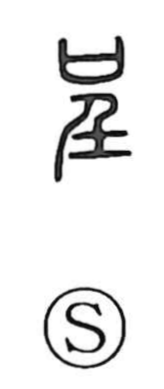

呈

Uncategorized
Kun: | On: tei
to present ・ to offer ・ to show ・ to expose ・ to propose
Explanation
The original form combines 口, the shape of a covenant vessel into which petitions to the gods were placed, with 壬, a side view of a person raised up on tiptoe. Together they depict lifting something high and presenting it before the deities—holding it out so it can be seen. From this image come the senses of offering or presenting, and by extension proposing or recommending. The same idea underlies later uses such as in rotei (露呈), where what had been hidden is made visible to the outside—appearing, being shown, or being exposed.